Esta página es para la mujer más importante de mi vida,
la persona que me enseñó lo que es el amor verdadero,
el esfuerzo y la familia.
Feliz Día de la Madre, Andrea Valesca Castro Maturana.
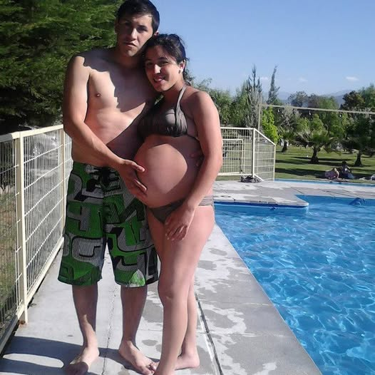
Mi mamá, Andrea Valesca Castro Maturana,
nació el 10 de noviembre de 1994.
Desde muy joven fue una persona fuerte,
cariñosa y capaz de dar todo por quienes amaba.
El 20 de octubre de 2011 comenzó una relación
con Jordi Hernán Nova Norambuena.
Eran dos adolescentes profundamente enamorados,
soñando juntos con formar una familia
y salir adelante sin importar las dificultades.
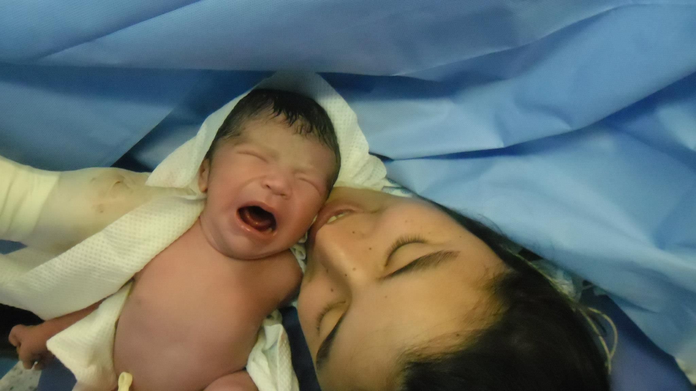
Ese día nació Martin Ignacio Nova Castro,
o sea, yo.
Mis papás eran adolescentes,
y aunque todo fue difícil,
nunca dejaron de luchar por mí.
Mi mamá incluso dejó sus estudios
para dedicarse completamente a cuidarme.
A pesar de tener poco,
siempre hicieron todo lo posible para darme lo mejor:
comida, ropa, leche, cuidados y muchísimo amor.
Nunca me faltó cariño.
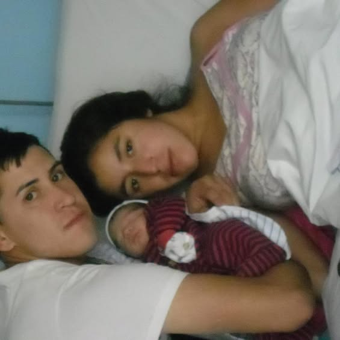
Mi mamá aprendió a ser fuerte demasiado rápido.
Mientras otras personas vivían su adolescencia,
ella dedicaba sus días y noches a criarme.
Dormía poco, se preocupaba por todo
y aun así siempre encontraba la forma
de abrazarme, cuidarme y hacerme sentir amado.
Ahí comenzó la historia
de la mejor mamá del mundo.
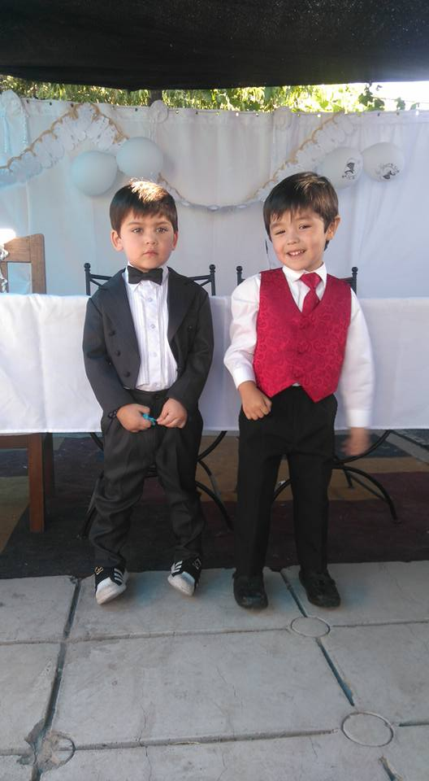
Seis meses después de mi nacimiento,
mi tía Nataly
tuvo a su hijo, mi primo Lucas.
Mis papás lo cuidaron como si fuera parte de nosotros.
Le enseñaron a caminar,
compartimos toda nuestra infancia juntos
y se convirtió en un hermano para mí.
Mi mamá nunca hizo diferencias.
Siempre entregó amor a todos.
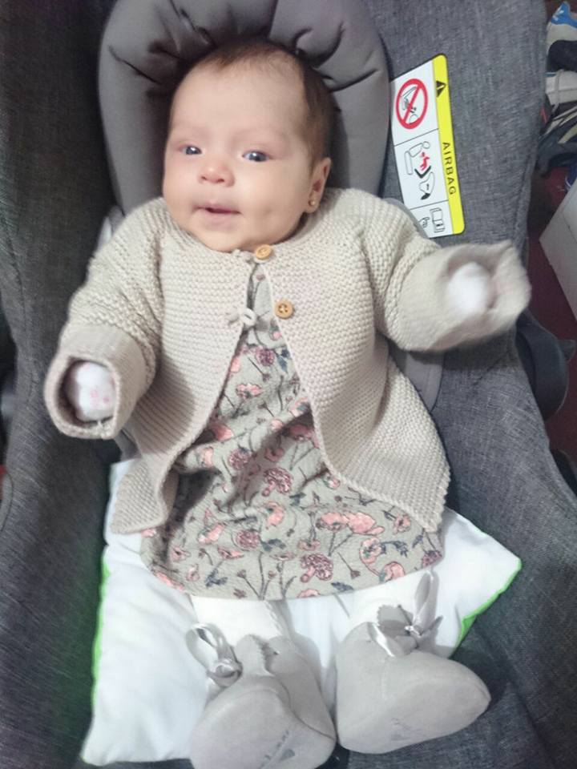
El 27 de abril de 2017 nació
Trinidad,
mi hermana pequeña.
Desde ese momento,
mi mamá tuvo que dividir su tiempo,
su energía y su amor entre dos hijos,
pero aun así siempre logró estar presente.
Nos enseñó valores,
respeto y unión familiar.
Gracias a ella,
nuestra familia siempre se mantuvo fuerte.
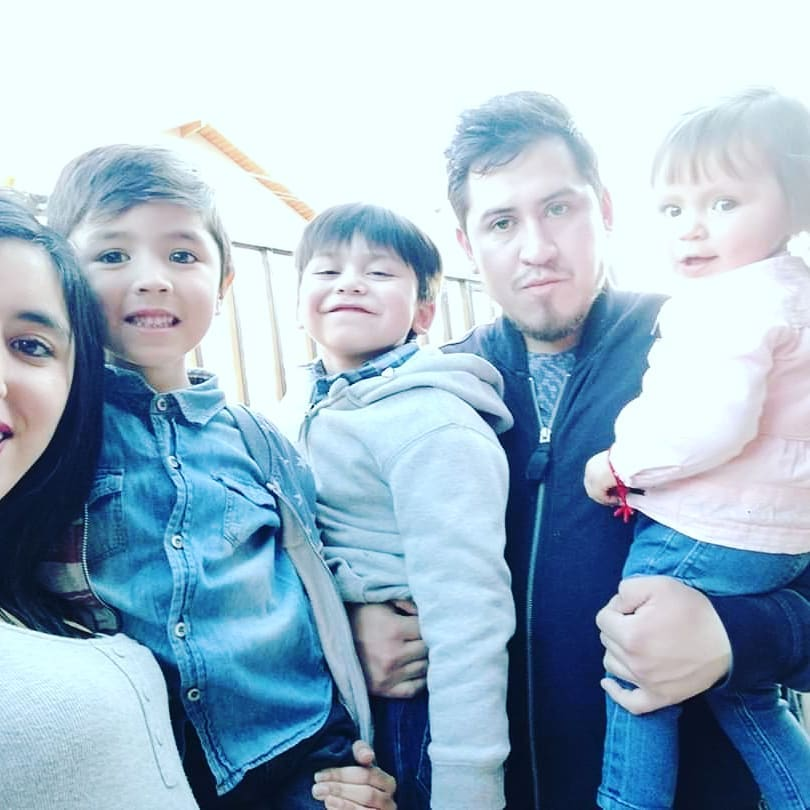
Durante muchos años vivimos
en La Pintana,
junto a mis abuelos,
mi tía y mi primo.
Aunque no éramos ricos,
crecimos rodeados de cariño,
apoyo y unión.
Mi mamá siempre hacía lo posible
para mantenernos felices,
incluso cuando las cosas eran difíciles.
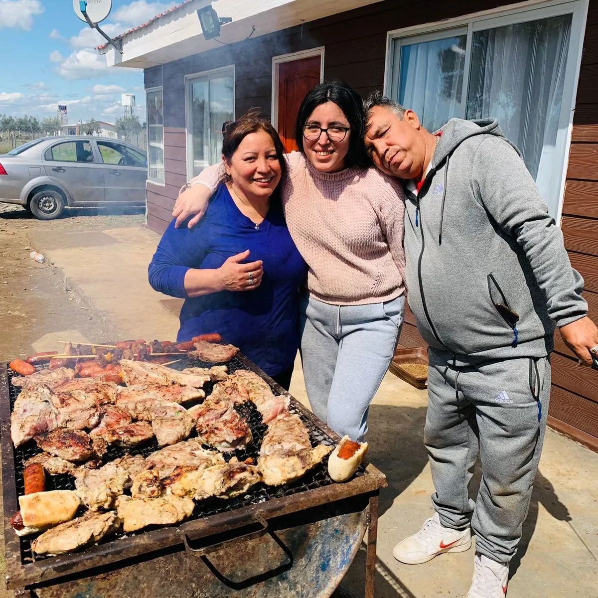
En 2022 nos mudamos
a San Nicolás.
Fue una decisión difícil,
porque dejamos atrás muchas personas
y recuerdos importantes.
Mi tía y mi primo se quedaron
en La Pintana,
y la separación nos dolió muchísimo.
Pero mis papás pensaron en nuestro futuro.
Querían que viviéramos en un lugar más seguro
y con mejores oportunidades.
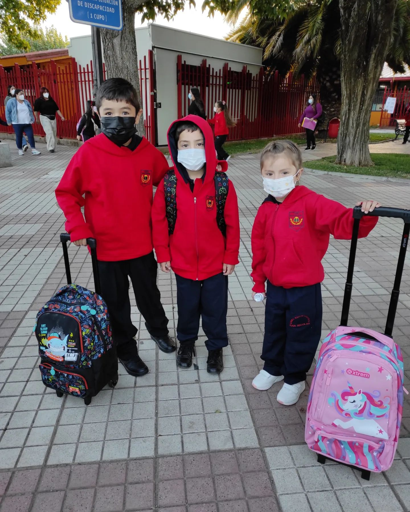
Gracias al esfuerzo de mis papás,
mi hermana y yo pudimos entrar
al Liceo Bicentenario De Excelencia
Polivalente San Nicolás.
Mi mamá siempre puso nuestra educación primero.
Nunca dejó de esforzarse
para que pudiéramos tener oportunidades
que quizás ella no tuvo.
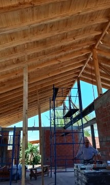
Entre enero y febrero de 2024,
nos mudamos a nuestra propia casa.
Esa casa fue construida
con años de sacrificio,
esfuerzo y amor.
Mis papás vendieron su camioneta,
su auto y su moto
para poder cumplir este sueño.
Mi mamá nunca se rindió.
Siempre siguió adelante pensando en nosotros.
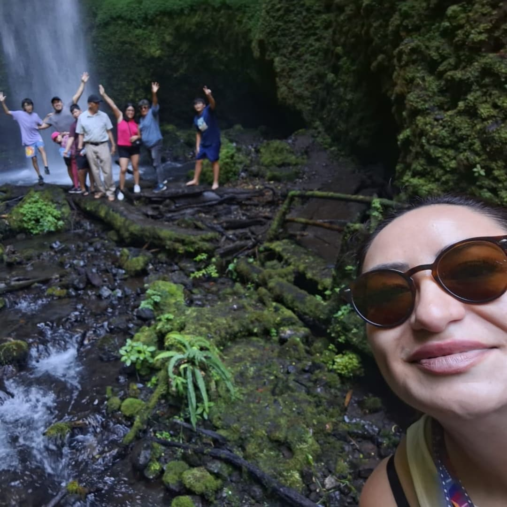
Aunque vivimos lejos de mi primo,
jamás dejamos de vernos.
En vacaciones y feriados
seguíamos compartiendo juntos.
Porque mi mamá nos enseñó
que la familia no depende de la distancia,
sino del amor que existe entre las personas.
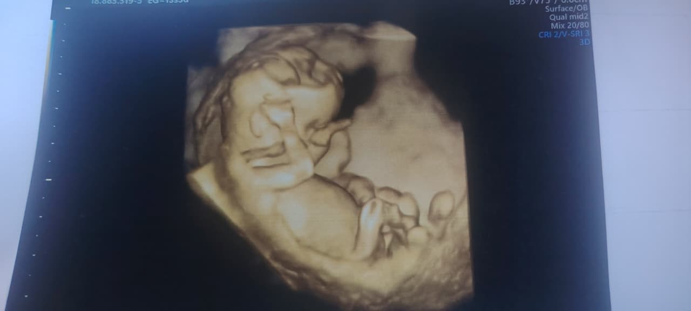
A inicios de marzo de 2026,
mi mamá quedó embarazada nuevamente.
Y aunque han pasado muchos años
desde que comenzó esta historia,
ella sigue siendo la misma persona fuerte,
luchadora y amorosa de siempre.
Nunca dejó de ser una madre increíble.
Gracias por cada sacrificio,
cada abrazo,
cada noche sin dormir,
cada consejo,
cada esfuerzo
y cada momento en el que nos pusiste primero.
Todo lo que soy hoy
es gracias a ti.
Feliz Día de la Madre.
Te amo infinitamente.